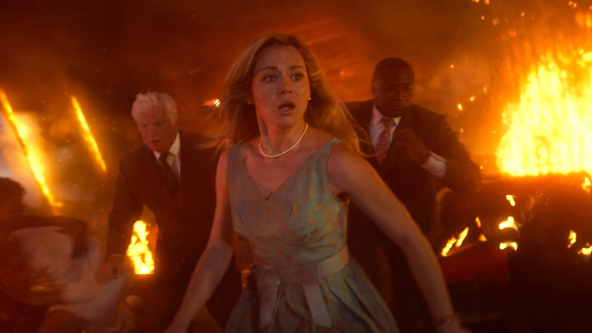

Final Destination Bloodlines: la saga ritrova la sua idea
Un prologo nel 1969, una famiglia che porta in eredità le premonizioni e l'ultimo ruolo di Tony Todd: il capitolo che rimette il gioco della morte al centro
Final Destination Bloodlines funziona perché la Morte torna a essere la vera protagonista, e proprio per questo i personaggi restano bersagli. Quando è arrivato nelle sale italiane, il 15 maggio 2025, ci chiedevamo se un meccanismo così noto, con incidenti a catena organizzati come un orologio, potesse ancora sorprendere. Sorprende, ma il merito è quasi tutto dell'idea di partenza e della regia delle morti, non di chi le subisce.
Un prologo che spiega tutto
La storia segue una studentessa che eredita dalla nonna le premonizioni su un disastro sventato in un grattacielo nel 1969. Da lì la Morte riprende il suo lavoro e si dedica ai sopravvissuti e ai loro discendenti. È un cambio di prospettiva intelligente, perché al posto di un gruppo di ragazzi che sfugge a un incidente c'è una famiglia che porta addosso un debito.
Il prologo del 1969 è la parte migliore, perché mette in scena tutto il gioco prima dei titoli. Iris e il fidanzato Paul sono all'inaugurazione del ristorante panoramico Sky View, in cima a una torre, e a un certo punto lei vede la catena di eventi che farà crollare tutto. Avverte i presenti e sventa il disastro, ma così scavalca il disegno della Morte, che si prenderà la rivincita sui discendenti. È un'attesa costruita con pazienza, e il pericolo si sente prima ancora che si veda. Proprio qui i registi Zach Lipovsky e Adam Stein, al lavoro su una sceneggiatura di Guy Busick e Lori Evans Taylor con un soggetto firmato anche da Jon Watts, mostrano di aver capito cosa chiede il pubblico del genere: più del sangue conta il piacere di vedere un oggetto banale diventare una minaccia.
La morte come ingegnere
La saga ha sempre vissuto di una sola idea: gli incidenti sono un'opera costruita, con un meccanismo di cause e conseguenze che lo spettatore tenta di leggere in anticipo. Bloodlines lo capisce e ci gioca, perché le scene di morte arrivano dopo falsi allarmi, oggetti in primo piano e rumori che sembrano innocui. Così chi guarda si ritrova a controllare ogni angolo dello schermo come in una caccia al tesoro in negativo.
La messa in scena delle morti, più dei personaggi, tiene in piedi il film. La grigliata di famiglia ne è l'esempio più chiaro: Stefani avverte tutti che la Morte sta arrivando, nessuno le crede, e Howard finisce travolto dal suo stesso tosaerba. Una scena del genere regge perché sembra una macchina costruita pezzo per pezzo, e Frank Scheck sull'Hollywood Reporter la definisce proprio una serie di morti da «Rube Goldberg», cioè congegni assurdi in cui ogni piccolo gesto ne innesca un altro. Il ritmo è buono, ma soprattutto il tono sa essere cupo e un po' ironico senza scivolare nella parodia, perché sa quando smettere di scherzare.
La scena che vale il film
La sequenza migliore arriva in ospedale, ed è la morte di Erik, il cugino con i piercing, interpretato da Richard Harmon. Si nasconde in una sala della risonanza magnetica, ma la macchina finisce per sbaglio in modalità di massima potenza e comincia a strappare i metalli. Prima salta il piercing al setto, poi il magnete tira verso di sé tutto il resto, compresa una sedia a rotelle che lo infilza mentre il corpo scivola nel tunnel. La scena dura a lungo e illude due volte che Erik possa cavarsela, però il peggio arriva davvero: si ride e si stringono i denti insieme. Il confronto più utile è con Final Destination 2, dove in ospedale una perdita di ossigeno nel reparto fa esplodere tutto e uccide Eugene e Clear in un colpo solo: lì la morte è un'esplosione improvvisa, qui è un'attesa che cresce, perché ogni oggetto metallico in campo diventa una minaccia visibile. Slashfilm mette la risonanza sopra quelle morti in clinica, e noi la pensiamo allo stesso modo proprio per questa differenza di ritmo.
Fuori da questa scena il livello cala un poco, ma il compattatore del camion della spazzatura che schiaccia la cugina Julia segue la stessa logica, e così la bobina del distributore automatico che colpisce Bobby: un oggetto banale, un dettaglio piazzato in anticipo, un incidente che sembrava lontano. Chi guarda prova a indovinare prima del film quale oggetto colpirà, perché ogni morte è anche un piccolo indovinello.
Il vantaggio di un racconto che si sposta tra due epoche è che la paura ha una storia. Sappiamo che cosa è successo nel 1969, quindi ogni volta che la famiglia ci pensa il conto sembra ancora aperto. È una cornice semplice, ma dà alle morti un senso di necessità che i capitoli più meccanici della saga non avevano.
L'ultimo ruolo di Tony Todd
C'è poi un dato che pesa sulla visione. Bloodlines è l'ultimo film di Tony Todd, che torna nei panni di William Bludworth: è lui a spiegare alla famiglia le regole della Morte, citando casi dei film precedenti, e in italiano ha la voce di Dario Oppido. L'attore morì nel novembre 2024, prima dell'uscita, ma aveva già girato tutte le sue scene e il film è dedicato a lui. Per chi segue la saga fin dal primo capitolo, quel monologo sulle regole suona come un congedo, perché Bludworth è sempre stato il volto di quelle regole.
Dove il film non convince
Il limite, per noi, sta nei personaggi. Dopo la morte di Erik non ricordiamo una sola scelta di Stefani o di Charlie che non sia scappare, perché li conosciamo per quello che rischiano e mai per quello che vogliono. Kaitlyn Santa Juana e Teo Briones fanno il possibile, ma il copione accenna le tensioni familiari più che svilupparle, e dopo ogni morte il lutto per i parenti si esaurisce in pochi secondi, subito prima del prossimo allarme. Il risultato spaventa e diverte, però lascia poco nella memoria dopo i titoli di coda.
La struttura ereditaria prometteva un racconto più emotivo di quello che arriva, perché una famiglia che deve fare i conti con il proprio debito avrebbe meritato scene in cui parlare e non solo correre. Il film preferisce tornare alla sua missione principale, ma così perde l'occasione di distinguersi dai capitoli precedenti.
Come è stato accolto
I numeri danno ragione alla scelta, anche se non spiegano i personaggi. Il film è costato 50 milioni di dollari e ne ha incassati circa 317,9 nel mondo, con 51,6 milioni nel primo weekend americano, il miglior esordio della saga. A ottobre 2026 ha il 92% di recensioni positive su Rotten Tomatoes, su 233 giudizi, e 73 su 100 su Metacritic; il CinemaScore del pubblico americano è B+. In Italia l'incasso è stato di circa 1,4 milioni di euro, un risultato più modesto in un mercato dove l'horror da sala ha numeri più piccoli.
Dove vederlo e a chi lo consigliamo
In Italia, a ottobre 2026 si trova in abbonamento su Sky Go e Now TV, mentre per il noleggio ci sono Apple TV Store e Timvision. Le piattaforme cambiano spesso catalogo, quindi conviene controllare prima di organizzare la serata.
Dura 110 minuti, ma li usa bene perché non si ferma mai troppo a lungo. Lo consigliamo a chi ama l'horror da sala e a chi vuole una serata di tensione senza troppi pensieri, ma anche a chi non ha visto i capitoli precedenti, perché il prologo del 1969 funziona da porta d'ingresso. Chi cerca personaggi ben scritti e un dramma familiare vero potrebbe uscirne con qualche rimpianto.
Domande frequenti
Quando è uscito Final Destination Bloodlines in Italia?
Il 15 maggio 2025 al cinema, distribuito da Warner Bros Italia. Negli Stati Uniti è arrivato il 16 maggio 2025.
Bisogna aver visto i film precedenti?
No. La storia parte da un prologo nuovo, ambientato nel 1969, e le regole del gioco sono spiegate dentro il film. Chi conosce la saga coglie qualche strizzata d'occhio in più.
Dove si può vedere in Italia?
A ottobre 2026 in abbonamento su Sky Go e Now TV, a noleggio su Apple TV Store e Timvision.
Fonti consultate (8)
- Wikipedia – Final Destination Bloodlines
- Wikipedia – Final Destination 2
- Slashfilm – La morte più cattiva di Final Destination Bloodlines
- The Hollywood Reporter – recensione di Final Destination Bloodlines
- Wikipedia – Final Destination Bloodlines (italiano)
- MYmovies – Final Destination - Bloodlines
- TMDB – scheda del film
- TMDB – dove vederlo in Italia